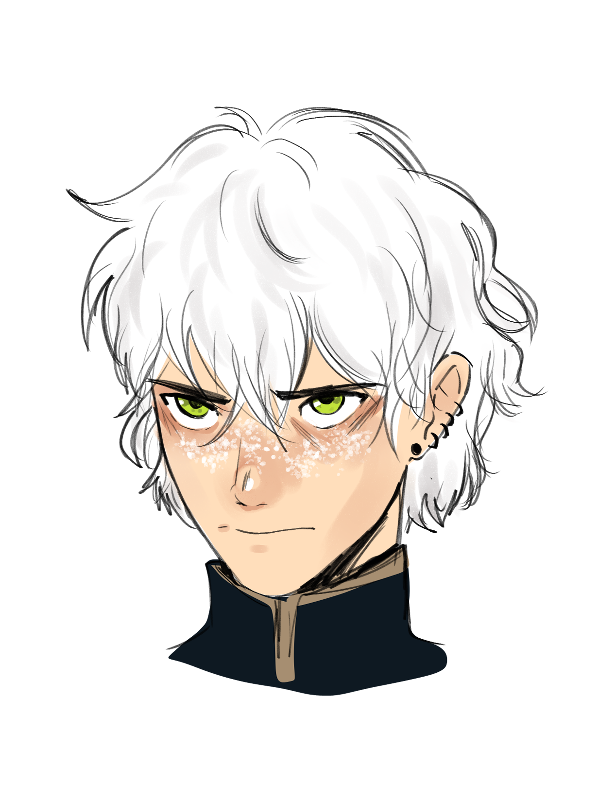

Vediamo la storia finora...
Neverwinter
Corre l’anno 1513 DR, è il primo mese di autunno (2 settimane prima degli eventi di Prismeer vd. Antefatto “I bambini di Prismeer”), un falco vola seguendo il fiume di Neverwinter, un carro si dirige verso la città.
Il falco osserva la città nella sua interezza, la parte bassa con le sue vie strette e mercati, la parte alta che mostra la ricchezza e la fama che la città del Faerun possiede, molti carri si muovono portando risorse ottenute dalla recente guerra avvenuta nel continente del Katashaka.
 Il falco si ferma poi su un palo del porto, un ragazzo, Asriel, si trova sotto di lui, mentre odora il profumo del pane appena sfornato. La sua ricerca l’ha portato fin lì.
Contemporaneamente, nella città bassa un’elfa molto particolare, con foglie autunnali su tutto il corpo si muove, cercando di non dare nell’occhio tra i mercati, il suo nome è Auryn. Un venditore con una maschera di legno gli offre una bambolina di pezza.
La ragazza si muove verso la biblioteca di Neverwinter, dove un mezzelfo sta litigando vivacemente con i bibliotecari, un giovane mago di nome Ravel.
Mentre Asriel si muove verso la città alta, nota un tintinnio provenire da un vicolo. Nella stretta via vede una singola moneta con il simbolo di un drago ucciso da una spada, dietro di lui uno scaltro ladro di nome Frank lo inganna catturandolo.
Auryn preoccupata dal suo braccio sinistro cerca risposte nei libri, non aveva notato un’umana seduta di fronte a lei intenta a leggere le carte. L’interazione è breve e confusa e Auryn viene colpita da un sonno profondo.
Ravel nota che al di fuori della biblioteca quella stessa elfa viene portata in un carro prigione e nota lo svenuto Asriel, una persona che non aveva visto da molto tempo, decide quindi di seguirlo.
Il carro viene portato nel palazzo della guardia di Inverno, Rockguard, un luogo estremamente controllato.
Ruben arriva in città, accompagnato da Gundren, che necessità un gruppo di avventurieri per scorta personale. Ruben si sente come evocato in quel luogo e quasi come se non controllasse le sue gambe si muove agilmente nella città, finchè un gruppo di guardie lo intercetta per conto di Jonah chiedendogli di venire a Rockguard per essere premiato per i suoi risultati nel Katashaka.
Asriel si sveglia e nota Frank e una maga dai capelli rosa, Elizabeth, che stanno facendo qualcosa alla sua compagna di cella, Auryn, usano un particolare strumento metallico per catturare quello che gli sembra del potere magico. Sono alla ricerca di una guida.
Ruben incontra Jonah, che lo accusa di essere un disertore, e gli chiede di dimostrare la sua fedeltà facendo un esecuzione ad Asriel ed Auryn, che Ruben sente essere i suoi compagni. Nella stessa stanza si trovano la ragazza delle carte, un cavaliere molto simile a Jonah, ma più giovane e Frank insieme a un folto gruppo di soldati.
Ravel riesce ad arrivare alla stanza fingendosi Lord Neveramber, ma Elizabeth ignora l’individuo e lancia una palla di fuoco per eliminare tutto il gruppo di ragazzi, che però nel caos trovano l’opportunità di scappare, lanciandosi dal palazzo. Riescono a salvarsi grazie alla bambola di pezza che si ingradisce e gli offre un piano d’atterraggio.
Frank però li sta inseguendo, riescono quindi a prendere un carro e scappano da Neverwinter. Gli viene però spedito contro un drago guardiano nero e dopo uno scontro senza esclusioni di colpi riescono a far cadere il drago da un precipizio.

Quella notte Asriel e Ravel amici dell’orfanotrofio si riavvicinano e un intenso incubo incombe su di loro: